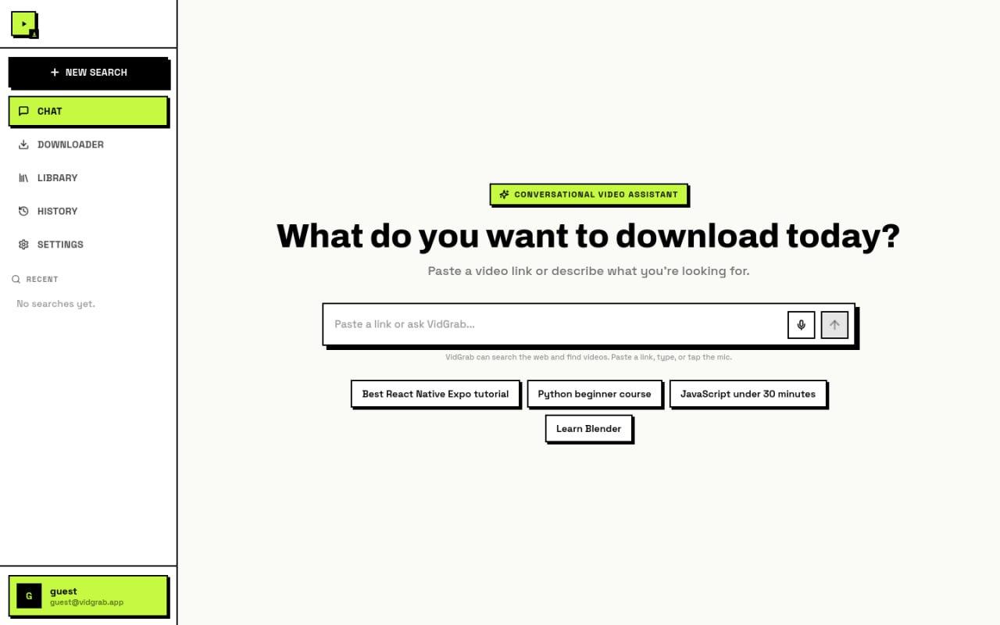

The problem
The problem is not information, it is checking. Gmail for the school notice, Slack for work, Teams because one client lives there, Discord for a single server, Instagram because someone DMs instead of texting, a calendar half the invitations never reach, a booking page checked from memory. Each app is easy. Together they cost a dozen context switches a day, and every one starts with the same question: is there anything in here? Usually there is not, and you still had to look.
What I built
Nine connected sources — Gmail, Outlook, Slack, Microsoft Teams, Discord, Instagram, Google Calendar, Cal.com and Google Meet — read through Composio and normalised into one feed. Each row says where it came from, what it says, and whether it is at risk, awaiting your reply, scheduled or handled. Google Calendar and Google Tasks are the destinations for anything you decide to act on.
Three behaviours matter more than the count. It ignores you: your own sent mail, your own messages and your own Instagram DMs are filtered before they reach the list. It forgets: delete the email, cancel the event, drop the booking, and the item leaves the plan. And it is honest: every connector declares its trigger, read and action capabilities, and the card states where a platform has no real-time events instead of implying it does.
How I built it
TanStack Start with TypeScript and Tailwind for the web app, with an Expo client reading the same API. Clerk handles authentication; PostgreSQL stores plan items, with pglite for local development. Composio brokers every OAuth, so the app never holds a provider token.
Real-time delivery uses Composio trigger instances and a webhook endpoint that verifies an HMAC signature over the webhook id, timestamp and body before anything is written. Gmail, Google Calendar, Outlook and Slack push events; Discord polls one channel you name; Teams, Instagram and Cal.com have no stream to subscribe to, so those refresh on sync. Two structures do the heavy lifting: a connector registry where one entry describes an app and every list in the app derives from it, and a reconciliation pass that removes rows whose source item no longer exists.
Key decisions
- Removed the AI. The first version extracted tasks from pasted text with a language model. It produced confident nonsense — flagging a routine security notice as needing immediate review — on a problem the app could read directly. Deleting it made the product smaller and truer: every item now comes from a record.
- Delete on absence only when absence is proven. Removing an item because it was not in a read is wrong if the read was capped at fifty, if the connector cannot read at all, or if the provider returned an empty page by accident. Reconciliation requires a complete read, a read-capable connector and a non-empty result.
- Read-only by default. SCOOP reads your accounts. It creates calendar events and tasks only when asked, and never replies, edits or marks anything handled on your behalf.
- Say what it cannot do. One line on a connector card — "no event stream, refreshes on sync" — prevents a support thread and a broken promise.
Result
Silver Award (2nd Place) at the CSC Back-to-School Hackathon, and selected for the Hackyard Build 2026 in-person round at IIT Guwahati from thousands of applicants. The submission has since grown well past the hackathon entry: nine working integrations behind one capability model, real-time delivery for the four sources that support it, reconciliation, and web and mobile clients on the same API.